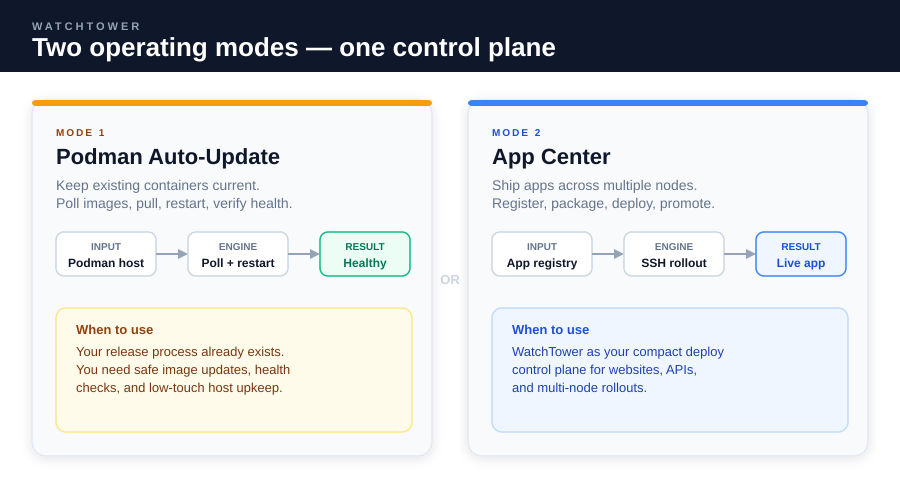
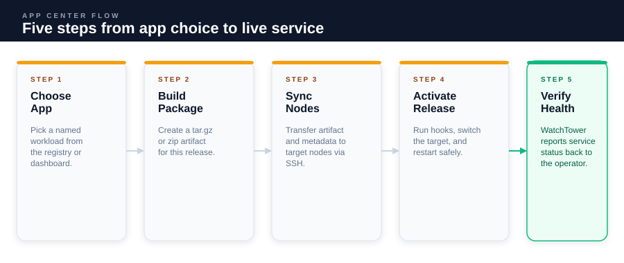
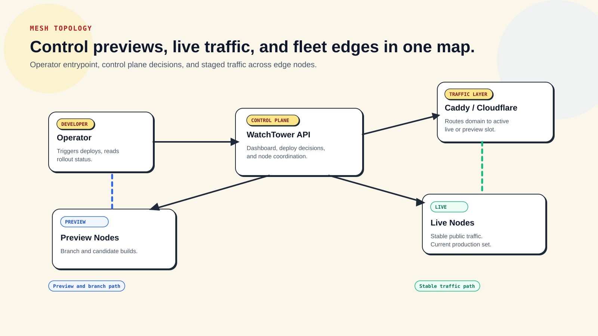
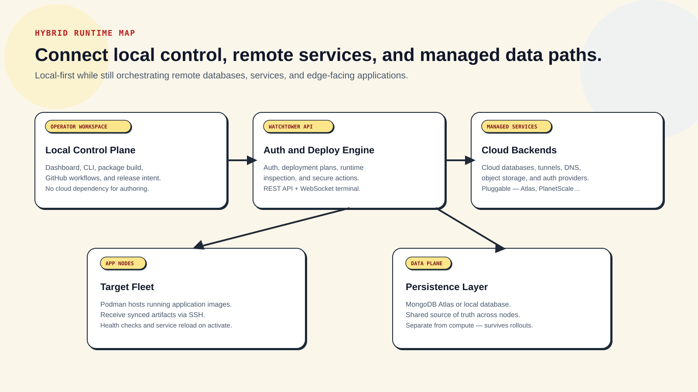
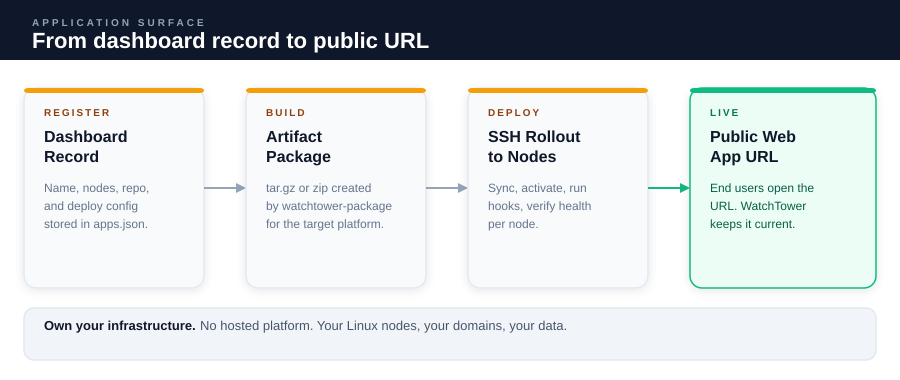
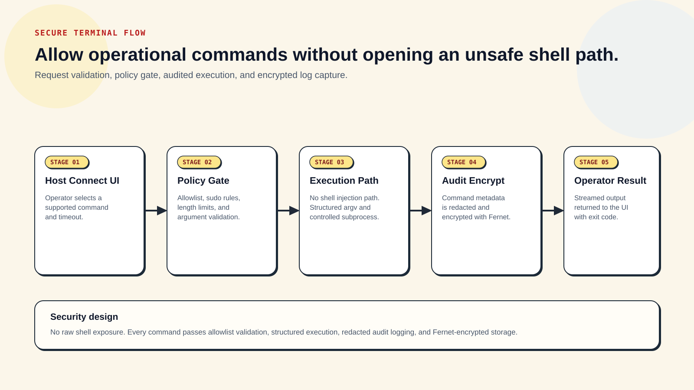

Release Channel
GitHub + GHCR + PyPI
Product-style documentation for WatchTower operations, setup, and release flow.
WatchTower
WatchTower has two jobs: keep Podman workloads current, or act like a compact deployment control plane for websites and APIs. This docs home is designed to explain those jobs first, then lead you into the right blueprint or runbook.
Release Channel
GitHub + GHCR + PyPI
Deployment Modes
App Center, Mesh, Hybrid
Auth Modes
GitHub OAuth or API Token
Docs UX
Sidebar + Panels
What It Is
WatchTower gives teams one place to register workloads, inspect rollout state, and act on hosts without inventing a full platform layer.
What Goes In
You provide the app definition, the target fleet, and the rollout trigger. WatchTower turns that into an explicit deploy path.
What Comes Out
The output is either updated containers with health checks or a promoted application release that operators can verify quickly.
Choose the path that matches the job you are trying to do. This is the shortest route for a first-time visitor.
Path 1
Use Podman auto-update mode if you already deploy containers and only want safe polling, restart, and health verification.
Path 2
Use App Center mode if you want app registration, packaging, SSH rollout, previews, and promotions from one dashboard.
Path 3
Use Host Connect and the secure terminal flow if the team needs guided host commands with policy gates and audit history.

Modes Overview Start here if you need to understand the difference between host maintenance and application delivery.
Deployment Process See the full App Center release path from app selection to healthy service.
Mesh Topology Understand how preview and live traffic move through the mesh after WatchTower makes a routing decision.
Hybrid Stack See how local operator tools, remote nodes, and managed cloud services fit into one deployment model.
Application Surface Trace the path from dashboard-managed app records to the URL your users finally open.
Secure Terminal Flow Understand how guided host actions stay useful without exposing a raw shell session.This section keeps the provenance story explicit while matching the application’s panel-based information layout.
The same “what do I do next?” UX from the product dashboard is carried into the docs as a concise operational checklist.
1) Open Host Connect in WatchTower
2) Install missing tools on each team machine
3) Join Tailscale tailnet for private connectivity
4) Configure encrypted terminal audit key
5) Generate Cloudflare tunnel domain plan
6) Deploy applications from DashboardUse the same quick-link discovery pattern as the app for the documents teams actually open during setup and operations.